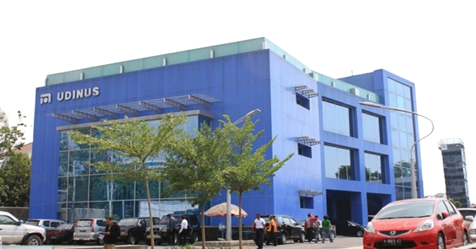

Universitas Dian Nuswantoro (UDINUS)

Universitas Dian Nuswantoro adalah universitas swasta yang didirikan
oleh Yayasan Dian Nuswantoro Semarang. Yayasan ini terdiri dari
beberapa sekolah tinggi yang memfokuskan di beberapa ilmu tertentu
yaitu Sekolah Tinggi Manajemen Informatika dan Komputer,
Sekolah Tinggi Ilmu Ekonomi, Sekolah Tinggi Bahasa Asing,
dan Sekolah Tinggi Kesehatan.